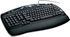

De: La Frikipedia, la enciclopedia extremadamente seria.
De: La Frikipedia, la enciclopedia extremadamente seria. De: La Frikipedia, la enciclopedia extremadamente seria.

|
FRIKIPEDIA QUIERE QUE ESTA DEFINICIÓN
PASE A SER UN ARTÍCULO FRIKIPÉDICO La información contenida en este artículo es una mínima parte de su jugo total, así que ponte los guantes, saca el tupperwere y empieza a exprimir el tema. Si lo haces serás recompensado con una galleta en almíbar y algo más. |
Bloqueo de Desplazamiento o simplemente Bloq Despl es la tecla ubicada entre el Imprime Pantalla y Pausa. La mayoria de la gente no sabe para que carajo sirve, sólo saben que al apretarlo prende una de las tres luces, otros ni eso (me incluyo).
Bloque Desplazamiento es la obra maestra de la ingenieria teorica gráfica del amestro Da vinçi, este la ideó y dibujo despues de que en sus sueños un wombat le revelara que en un futuro, un malgno ser trataria de apoderarse del mundo por medio del plan Haseforch Corpoation entre ellos crearia un universo infinito mucho peor que el infierno de salsa, conocido como Haseforch Excel, al commienzo Da vinçi no hizo caso, pero cuando el Wombat le dijo ke tendria mas de 2500 celdas Da vinçi lo fabricó para que los usuarios sean contadores o telepatas pobres ingenuos que cayeran en la trampa pudesesn viajar atravéz del tiempo y el espacio de una celda a otra con el mejor amigo del hombre el teclado dejando el cursor en una celda aparte y no perderse en la inmencidad del mar de celdas.
Para la pesima suerte de Davinçi, olvido sacar los derechos de autor y el Señor Bill Gates tomo el invento como suyo, agregandolo al eclado y asi escondiendo la unica vi ça de escape a su plan malevolo.
|  Combinaciones del teclado |
|---|
| Alt+F4 | Any Key | Asdasd | ASDF | Bloq Despl | Ctrl+Alt+Supr | Ctrl+C Ctrl+V | Intro Ctrl+X | Ctrl+Z | Qwerty | Qweqwe | Teclado |
Autor(es):